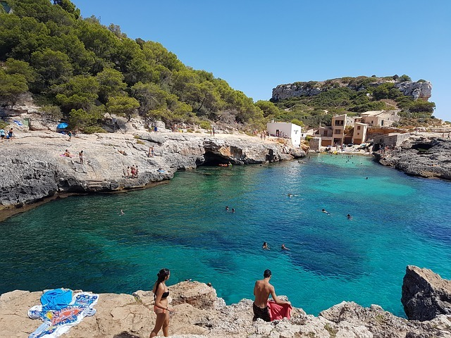

MALLORCA · 27 AGO
Praia de dia. Festa à noite.
Roteiro, reservas pagas, gastos e mapas do grupo por Mallorca.
Ver os 5 dias →
VISÃO GERAL
Cinco dias de ilha
ROTEIRO
Dia a dia
Toque em uma atividade para ver horário, localização, reserva e mapa.
SEUS VALORES
Custos individuais
Os custos já pagos foram confirmados por pessoa. Registre seus gastos reais abaixo.
PREVISÃO AINDA A GASTAR
Custos variáveis do roteiro
Faixas do roteiro atualizado. Não incluem os itens acima já pagos.
GASTO REAL
Comida, bebida e extras
Registre somente o que você pagou durante a viagem.
GUIA DE VIAGEM
Preparação e acesso
Informações importantes para ter o roteiro no celular.
Barco reservado
Magic Catamarans, 15h30 no domingo. Encontro no cais em frente ao Auditorium de Palma, Passeig Marítim. Chegue até 15h.
Instalar no iPhone
No Safari, toque em Compartilhar e escolha Adicionar à Tela de Início. O site abre como aplicativo e seus gastos ficam salvos neste aparelho.
CHECKLIST
Antes de sair
LINKS ÚTEIS
Aeroporto de Palma ↗Ponto do barco ↗AMØK Mallorca ↗